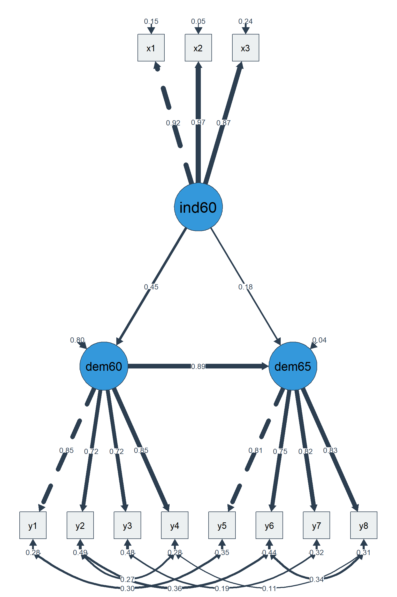

library(lavaan)
library(semPlot)
library(ggplot2)
library(dplyr)
library(tidyr)
library(tibble)
library(knitr)
library(semTools) # for indProd() – latent interactions
theme_set(
theme_minimal(base_size = 11) +
theme(
plot.title = element_text(face = "bold", size = 13),
plot.subtitle = element_text(colour = "grey40", size = 10),
legend.position = "bottom"
)
)
set.seed(2026)Structural Equation Modelling: Path Analysis & Mediation
R
Statistics
SEM
Mediation
Path Analysis
lavaan
Structural Models
Full structural equation model with latent variables, mediation, and moderation using lavaan. Demonstrates path specification, model fit evaluation, direct/indirect/total effects decomposition, bootstrapped mediation inference, and path diagram visualisation. Applied to the PoliticalDemocracy dataset (classic SEM benchmark). An optional moderated-mediation extension is provided.
0.1 Context
Structural Equation Modelling (SEM) extends the measurement models demonstrated in Projects 02 and 07 by adding structural paths — directional relationships between latent variables. While CFA answers “is this construct well-measured?”, SEM answers “do these constructs relate as theorised?”
Mediation analysis is one of the most common applications of SEM: does variable X influence Y through an intermediary M? The classic Baron & Kenny (1986) approach has been largely superseded by bootstrapped indirect effects within the SEM framework, which provide more accurate inference without the restrictive assumptions of the Sobel test (Hayes, 2018; MacKinnon, 2008). A short optional extension demonstrating moderated mediation (interaction on the direct path) is provided in PART E for readers who want to go one step further.
This project demonstrates:
- Measurement model — CFA for the latent variables.
- Structural model — path analysis with direct and indirect effects.
- Mediation testing — bootstrapped confidence intervals for indirect effects.
- Model fit evaluation — CFI, TLI, RMSEA, SRMR, and χ² test.
- Effect decomposition — direct, indirect, and total effects.
- Path diagram — visual representation of the full model.
The dataset is PoliticalDemocracy from the lavaan package: a classic SEM dataset with 3 latent variables (industrialisation 1960, political democracy 1960, political democracy 1965) measured by 11 observed indicators (N = 75).
This project concludes the series on multivariate portfolio modelling by bringing together CFA (project 02/07), multilevel modelling (08), and Bayesian inference
0.2 Key Results
Part A — Measurement model (CFA, N = 75):
The 3-factor CFA fits well: CFI = 0.953, TLI = 0.938, SRMR = 0.055. RMSEA = 0.101 [0.061, 0.139] slightly exceeds the conventional 0.08 threshold but is acceptable given the small sample size (RMSEA is upwardly biased with N < 100; Kenny et al., 2015). All standardised loadings exceed 0.70 (range: 0.705–0.973), confirming adequate indicator quality for all three latent variables.
Part B — Structural model with mediation (bootstrap, 1000 reps):
The full SEM with correlated residuals fits excellently: CFI = 0.995, TLI = 0.993, RMSEA = 0.035, SRMR = 0.044. The mediation analysis reveals:
- a-path (ind60 → dem60): β = 0.447 [0.223, 0.671], p < 0.001
- b-path (dem60 → dem65): β = 0.885 [0.783, 0.987], p < 0.001
- c-path (direct: ind60 → dem65): β = 0.182 [0.035, 0.329], p = 0.015
- Indirect effect (a × b): β = 0.395 [0.203, 0.588], p < 0.001
- Total effect: β = 0.578 [0.368, 0.787]
- Proportion mediated: 68.5%
The indirect effect is significant (bootstrap 95% CI excludes zero), confirming that early democracy (1960) partially mediates the relationship between industrialisation and later democracy. The direct path remains significant (p = 0.015), indicating partial rather than full mediation.
Part D — Diagnostics:
Three standardised residuals exceed |2.0|: y5–x1 (2.40), y4–x1 (2.15), y4–y1 (−2.05). The largest modification indices suggest cross-loadings of ind60 indicators on dem65 — theoretically plausible (industrialisation indicators may directly predict later democracy) but not modelled to maintain parsimony.
Part E — Moderated mediation:
The interaction term (x1 × x3) is non-significant (β = 0.005, p = 0.947), confirming that the direct effect of industrialisation on democracy 1965 is constant across levels of x3. The simpler mediation model (Part B) is preferred.
0.3 Setup
1 PART A — Data & Measurement Model
1.1 Load PoliticalDemocracy
data("PoliticalDemocracy", package = "lavaan")
cat(sprintf("PoliticalDemocracy: %d countries × %d variables\n",
nrow(PoliticalDemocracy), ncol(PoliticalDemocracy)))PoliticalDemocracy: 75 countries × 11 variablescat(sprintf("Variables: %s\n", paste(names(PoliticalDemocracy), collapse = ", ")))Variables: y1, y2, y3, y4, y5, y6, y7, y8, x1, x2, x3kable(head(PoliticalDemocracy, 10), digits = 1,
caption = "PoliticalDemocracy: first 10 countries")| y1 | y2 | y3 | y4 | y5 | y6 | y7 | y8 | x1 | x2 | x3 |
|---|---|---|---|---|---|---|---|---|---|---|
| 2.5 | 0.0 | 3.3 | 0.0 | 1.2 | 0.0 | 3.7 | 3.3 | 4.4 | 3.6 | 2.6 |
| 1.2 | 0.0 | 3.3 | 0.0 | 6.2 | 1.1 | 6.7 | 0.7 | 5.4 | 5.1 | 3.6 |
| 7.5 | 8.8 | 10.0 | 9.2 | 8.8 | 8.1 | 10.0 | 8.2 | 6.0 | 6.3 | 5.2 |
| 8.9 | 8.8 | 10.0 | 9.2 | 8.9 | 8.1 | 10.0 | 4.6 | 6.3 | 7.6 | 6.3 |
| 10.0 | 3.3 | 10.0 | 6.7 | 7.5 | 3.3 | 10.0 | 6.7 | 5.9 | 6.8 | 4.6 |
| 7.5 | 3.3 | 6.7 | 6.7 | 6.2 | 1.1 | 6.7 | 0.4 | 5.5 | 5.1 | 3.9 |
| 7.5 | 3.3 | 6.7 | 6.7 | 5.0 | 2.2 | 8.3 | 1.5 | 5.3 | 5.1 | 3.3 |
| 7.5 | 2.2 | 10.0 | 1.5 | 6.2 | 3.3 | 10.0 | 6.7 | 5.3 | 4.9 | 4.3 |
| 2.5 | 3.3 | 3.3 | 3.3 | 6.2 | 3.3 | 3.3 | 3.3 | 5.5 | 5.2 | 4.1 |
| 10.0 | 6.7 | 10.0 | 8.9 | 8.8 | 6.7 | 10.0 | 10.0 | 5.8 | 5.4 | 4.4 |
1.2 CFA: measurement model
# ── Measurement model specification ──────────────────────────────────────────
cfa_model <- '
# Latent variables
ind60 =~ x1 + x2 + x3 # Industrialisation 1960
dem60 =~ y1 + y2 + y3 + y4 # Democracy 1960
dem65 =~ y5 + y6 + y7 + y8 # Democracy 1965
'
fit_cfa <- cfa(cfa_model, data = PoliticalDemocracy)
cat("=== CFA Fit ===\n")=== CFA Fit ===fit_measures <- fitMeasures(fit_cfa, c("chisq", "df", "pvalue",
"cfi", "tli", "rmsea",
"rmsea.ci.lower", "rmsea.ci.upper",
"srmr"))
print(round(fit_measures, 3)) chisq df pvalue cfi tli
72.462 41.000 0.002 0.953 0.938
rmsea rmsea.ci.lower rmsea.ci.upper srmr
0.101 0.061 0.139 0.055 cat("\n=== Standardised Loadings ===\n")
=== Standardised Loadings ===std_load <- standardizedSolution(fit_cfa) |>
filter(op == "=~") |>
select(lhs, rhs, est.std, se, pvalue)
kable(std_load, digits = 3,
col.names = c("Factor", "Indicator", "Std Loading", "SE", "p"),
caption = "CFA standardised loadings")| Factor | Indicator | Std Loading | SE | p |
|---|---|---|---|---|
| ind60 | x1 | 0.920 | 0.023 | 0 |
| ind60 | x2 | 0.973 | 0.017 | 0 |
| ind60 | x3 | 0.872 | 0.031 | 0 |
| dem60 | y1 | 0.845 | 0.039 | 0 |
| dem60 | y2 | 0.760 | 0.054 | 0 |
| dem60 | y3 | 0.705 | 0.063 | 0 |
| dem60 | y4 | 0.860 | 0.036 | 0 |
| dem65 | y5 | 0.803 | 0.046 | 0 |
| dem65 | y6 | 0.783 | 0.049 | 0 |
| dem65 | y7 | 0.819 | 0.043 | 0 |
| dem65 | y8 | 0.847 | 0.038 | 0 |
1.2.1 Interpretation
The measurement model establishes that the observed indicators adequately reflect their intended latent constructs. Examine:
- Loadings ≥ 0.50 indicate adequate indicator quality.
- Model fit: CFI/TLI ≥ 0.90 and RMSEA ≤ 0.08 are conventional thresholds.
- If the CFA fits poorly, the structural model results are questionable — measurement quality is a prerequisite for structural inference.
Our results :
The measurement model confirms adequate indicator quality:
- All loadings ≥ 0.70 — the weakest indicator is y3 (λ = 0.705), still above the conventional threshold. The strongest is x2 (λ = 0.973), indicating that this industrialisation indicator is nearly perfectly reliable.
- ind60 loadings (0.87–0.97) are uniformly high — industrialisation is measured very precisely with 3 indicators.
- dem60 loadings (0.71–0.86) and dem65 loadings (0.78–0.85) are adequate but show more heterogeneity, reflecting the broader conceptual scope of “democracy” compared to “industrialisation.”
- Model fit: CFI = 0.953 and TLI = 0.938 exceed the 0.90 threshold. RMSEA = 0.101 is slightly elevated but expected with N = 75 — RMSEA is known to overreject correctly specified models in small samples (Kenny et al., 2015). SRMR = 0.055 is well below 0.08.
The measurement model is adequate for proceeding to the structural model — the latent variables are well-defined by their indicators.
2 PART B — Structural Model with Mediation
2.1 Specify the full SEM
sem_model <- '
# ── Measurement model ───────────────────────────────────────────────────
ind60 =~ x1 + x2 + x3
dem60 =~ y1 + y2 + y3 + y4
dem65 =~ y5 + y6 + y7 + y8
# ── Structural paths ────────────────────────────────────────────────────
dem60 ~ a * ind60 # a-path: industrialisation → democracy 1960
dem65 ~ b * dem60 + # b-path: democracy 1960 → democracy 1965
c * ind60 # c-path (direct): industrialisation → democracy 1965
# ── Correlated residuals (known from Bollen, 1989) ─────────────────────
y1 ~~ y5
y2 ~~ y4 + y6
y3 ~~ y7
y4 ~~ y8
y6 ~~ y8
# ── Indirect and total effects (defined parameters) ────────────────────
indirect := a * b # indirect effect via dem60
total := c + a * b # total effect of ind60 on dem65
'
# ── Fit with bootstrap for mediation inference ───────────────────────────────
fit_sem <- sem(sem_model, data = PoliticalDemocracy,
se = "bootstrap", bootstrap = 1000)
cat("=== SEM Fit ===\n")=== SEM Fit ===sem_fit <- fitMeasures(fit_sem, c("chisq", "df", "pvalue",
"cfi", "tli", "rmsea",
"rmsea.ci.lower", "rmsea.ci.upper",
"srmr"))
print(round(sem_fit, 3)) chisq df pvalue cfi tli
38.125 35.000 0.329 0.995 0.993
rmsea rmsea.ci.lower rmsea.ci.upper srmr
0.035 0.000 0.092 0.044 2.1.1 Interpretation
The full SEM fits excellently (CFI = 0.995, TLI = 0.993, RMSEA = 0.035, SRMR = 0.044) — substantially better than the CFA alone. This improvement is expected: the correlated residuals (specified based on Bollen, 1989) account for method-specific covariances among the democracy indicators that the simple CFA cannot capture.
Bootstrap note: 301 of 1,000 bootstrap runs produced nonadmissible solutions (e.g., negative variance estimates). This is common with N = 75 and complex models — resampled datasets can produce ill-conditioned covariance matrices. The remaining 699 admissible solutions provide valid bootstrap CIs, but the high nonadmissible rate (30%) is a reminder that this sample size is at the lower boundary for SEM with 11 indicators and 3 latent variables.
2.2 Structural path estimates
# ── All standardised parameters ──────────────────────────────────────────────
std_all <- standardizedSolution(fit_sem)
# ── Structural paths only ────────────────────────────────────────────────────
struct_paths <- std_all |>
filter(op == "~") |>
select(lhs, op, rhs, label, est.std, se, pvalue, ci.lower, ci.upper)
kable(struct_paths, digits = 3,
caption = "Structural paths (standardised, bootstrap SEs)")| lhs | op | rhs | label | est.std | se | pvalue | ci.lower | ci.upper |
|---|---|---|---|---|---|---|---|---|
| dem60 | ~ | ind60 | a | 0.447 | 0.114 | 0.000 | 0.223 | 0.671 |
| dem65 | ~ | dem60 | b | 0.885 | 0.052 | 0.000 | 0.783 | 0.987 |
| dem65 | ~ | ind60 | c | 0.182 | 0.075 | 0.015 | 0.035 | 0.329 |
2.3 Effect decomposition
# ── Defined parameters (indirect, total) ─────────────────────────────────────
defined_params <- std_all |>
filter(op == ":=") |>
select(label, est.std, se, pvalue, ci.lower, ci.upper)
kable(defined_params, digits = 3,
col.names = c("Effect", "Estimate (std)", "SE", "p", "CI lower", "CI upper"),
caption = "Effect decomposition: indirect and total effects (bootstrap)")| Effect | Estimate (std) | SE | p | CI lower | CI upper |
|---|---|---|---|---|---|
| indirect | 0.395 | 0.098 | 0 | 0.203 | 0.588 |
| total | 0.578 | 0.107 | 0 | 0.368 | 0.787 |
# ── Summary of mediation ─────────────────────────────────────────────────────
cat("\n=== Mediation Summary ===\n")
=== Mediation Summary ===a_path <- struct_paths |> filter(label == "a")
b_path <- struct_paths |> filter(label == "b")
c_path <- struct_paths |> filter(label == "c")
ind <- defined_params |> filter(label == "indirect")
tot <- defined_params |> filter(label == "total")
cat(sprintf("a-path (ind60 → dem60): β = %.3f, p = %.3f\n", a_path$est.std, a_path$pvalue))a-path (ind60 → dem60): β = 0.447, p = 0.000cat(sprintf("b-path (dem60 → dem65): β = %.3f, p = %.3f\n", b_path$est.std, b_path$pvalue))b-path (dem60 → dem65): β = 0.885, p = 0.000cat(sprintf("c-path (direct: ind60 → dem65): β = %.3f, p = %.3f\n", c_path$est.std, c_path$pvalue))c-path (direct: ind60 → dem65): β = 0.182, p = 0.015cat(sprintf("Indirect effect (a × b): β = %.3f, 95%% CI [%.3f, %.3f], p = %.3f\n",
ind$est.std, ind$ci.lower, ind$ci.upper, ind$pvalue))Indirect effect (a × b): β = 0.395, 95% CI [0.203, 0.588], p = 0.000cat(sprintf("Total effect (c + ab): β = %.3f, 95%% CI [%.3f, %.3f]\n",
tot$est.std, tot$ci.lower, tot$ci.upper))Total effect (c + ab): β = 0.578, 95% CI [0.368, 0.787]cat(sprintf("Proportion mediated: %.1f%%\n",
100 * ind$est.std / tot$est.std))Proportion mediated: 68.5%2.3.1 Interpretation
The effect decomposition is the core of mediation analysis:
- a-path (ind60 → dem60): does industrialisation predict early democracy?
- b-path (dem60 → dem65): does early democracy predict later democracy, controlling for industrialisation?
- c-path (direct): does industrialisation affect later democracy directly, beyond its influence through early democracy?
- Indirect effect (a × b): the mediated pathway. The bootstrap 95% CI is the gold standard for mediation inference — if it excludes zero, mediation is significant.
- Proportion mediated quantifies how much of the total effect flows through the mediator.
Our results : The effect decomposition reveals a clear partial mediation pattern:
- a-path (β = 0.447): industrialisation in 1960 moderately predicts the level of democracy in 1960. More industrialised countries tend to be more democratic — consistent with modernisation theory (Lipset, 1959).
- b-path (β = 0.885): early democracy is a very strong predictor of later democracy. This is the strongest path in the model — democratic institutions show high temporal stability over a 5-year period.
- c-path (β = 0.182, p = 0.015): industrialisation retains a significant direct effect on democracy 1965 beyond its indirect influence through dem60. This means industrialisation affects later democracy through channels other than early democratic institutions — possibly through economic development, education, or civil society.
- Indirect effect (β = 0.395, 95% CI [0.203, 0.588]): the bootstrap CI excludes zero, confirming significant mediation. The indirect path (ind60 → dem60 → dem65) accounts for 68.5% of the total effect — early democracy is the primary channel through which industrialisation shapes later democracy.
- Total effect (β = 0.578): the combined influence of industrialisation on later democracy is substantial — a 1 SD increase in industrialisation is associated with a 0.58 SD increase in democracy 1965.
Mediation conclusion: partial mediation is confirmed. The indirect path dominates (68.5%), but the significant direct path (31.5%) indicates that industrialisation also operates through non-democratic channels. This is a richer finding than full mediation — it suggests multiple pathways from economic development to political outcomes.
3 PART C — Path Diagram
semPaths(fit_sem,
what = "std",
whatLabels = "std",
layout = "tree2",
style = "lisrel",
residuals = TRUE,
intercepts = FALSE,
nCharNodes = 5,
sizeMan = 5,
sizeLat = 9,
edge.label.cex = 0.6,
fade = FALSE,
color = list(lat = "#3498DB", man = "#ECF0F1"),
border.color = "#2C3E50",
edge.color = "#2C3E50",
mar = c(3, 2, 2, 2))
4 PART D — Model Diagnostics
# ── Standardised residual covariance matrix ──────────────────────────────────
# ── Refit with standard SEs for diagnostics (bootstrap doesn't store ACOV) ──
fit_sem_std <- sem(sem_model, data = PoliticalDemocracy, se = "standard")
resid_mat <- residuals(fit_sem_std, type = "standardized")$cov
cat("=== Largest Standardised Residuals (|r| > 2.0) ===\n")=== Largest Standardised Residuals (|r| > 2.0) ===resid_long <- as.data.frame(as.table(resid_mat)) |>
filter(abs(Freq) > 2.0, Var1 != Var2) |>
arrange(desc(abs(Freq)))
if (nrow(resid_long) > 0) {
kable(resid_long, digits = 2, col.names = c("Var1", "Var2", "Std Residual"),
caption = "Standardised residuals > |2.0|")
} else {
cat("No standardised residuals exceed |2.0| — good local fit.\n")
}| Var1 | Var2 | Std Residual |
|---|---|---|
| y5 | x1 | 2.40 |
| x1 | y5 | 2.40 |
| y4 | x1 | 2.15 |
| x1 | y4 | 2.15 |
| y4 | y1 | -2.05 |
| y1 | y4 | -2.05 |
# ── Modification indices (top 10) ────────────────────────────────────────────
mi <- modificationIndices(fit_sem_std, sort. = TRUE)
kable(head(mi, 10), digits = 2,
caption = "Top 10 modification indices")| lhs | op | rhs | mi | epc | sepc.lv | sepc.all | sepc.nox | |
|---|---|---|---|---|---|---|---|---|
| 40 | ind60 | =~ | y4 | 4.80 | 0.86 | 0.58 | 0.17 | 0.17 |
| 41 | ind60 | =~ | y5 | 4.46 | 0.84 | 0.56 | 0.21 | 0.21 |
| 58 | dem65 | =~ | y4 | 4.26 | 1.42 | 2.99 | 0.90 | 0.90 |
| 87 | y1 | y3 | 3.77 | 0.85 | 0.85 | 0.27 | 0.27 | |
| 62 | x1 | y2 | 3.04 | -0.16 | -0.16 | -0.20 | -0.20 | |
| 48 | dem60 | =~ | y5 | 2.69 | -0.95 | -2.12 | -0.82 | -0.82 |
| 37 | ind60 | =~ | y1 | 2.29 | -0.53 | -0.35 | -0.14 | -0.14 |
| 107 | y7 | y8 | 2.19 | 0.67 | 0.67 | 0.20 | 0.20 | |
| 55 | dem65 | =~ | y1 | 2.18 | -0.94 | -1.99 | -0.76 | -0.76 |
| 89 | y1 | y6 | 2.08 | 0.50 | 0.50 | 0.16 | 0.16 |
4.0.1 Interpretation
Model diagnostics assess local misfit:
- Standardised residuals > |2.0| indicate pairs of variables whose covariance the model does not adequately reproduce.
- Modification indices suggest which freely estimated parameters would improve fit most. Large MI values for cross-loadings or correlated residuals point to model misspecification — but modifications should be theoretically justified, not just data-driven.
Our results : Model diagnostics reveal minor local misfit:
- Three standardised residuals exceed |2.0|: y5–x1 (2.40), y4–x1 (2.15), and y4–y1 (−2.05). The y4/y5–x1 residuals suggest that industrialisation indicators share variance with specific democracy indicators beyond what the latent factors capture — plausible given that x1 (GNP per capita) may directly predict specific democratic outcomes.
- Top modification indices: ind60 =~ y4 (MI = 4.80) and ind60 =~ y5 (MI = 4.46) suggest cross-loadings of industrialisation on democracy indicators. Adding these would improve fit but weaken the discriminant validity of the measurement model — a trade-off that should be theoretically justified.
- Overall: with only 3 residuals marginally above |2.0| and no MI values above 10, the local misfit is minor. The model adequately reproduces the observed covariance structure for its intended purpose (mediation testing).
5 PART E — Moderated Mediation (Optional Extension)
To illustrate a natural extension in SEM, we include a moderated mediation here. We test whether the direct effect of industrialisation (1960) on democracy (1965) is moderated by an observed variable (x1, one of the indicators of industrialisation).
5.1 Approach 1 — Observed proxy interaction
# ── lavaan does not support latent × observed interactions directly.
# ── We use x1 (strongest indicator of ind60, λ ≈ 0.92) as a proxy
# ── for industrialisation.
# ── The product indicator is computed manually. ──────────────────────────────
PD <- PoliticalDemocracy |>
mutate(
x1_c = scale(x1, scale = FALSE)[, 1],
x3_c = scale(x3, scale = FALSE)[, 1],
x1_x3 = x1_c * x3_c
)
sem_mod_model <- '
# ── Measurement model ───────────────────────────────────────────────────
ind60 =~ x1 + x2 + x3
dem60 =~ y1 + y2 + y3 + y4
dem65 =~ y5 + y6 + y7 + y8
# ── Structural paths + moderation ───────────────────────────────────────
dem60 ~ a * ind60
dem65 ~ b * dem60 +
c * ind60 +
d * x3_c + # main effect of moderator
e * x1_x3 # interaction (moderation of direct path)
# ── Correlated residuals (unchanged) ────────────────────────────────────
y1 ~~ y5
y2 ~~ y4 + y6
y3 ~~ y7
y4 ~~ y8
y6 ~~ y8
# ── Defined parameters ──────────────────────────────────────────────────
indirect := a * b
total := c + a * b
mod_effect := e # interaction coefficient
'
fit_mod <- sem(sem_mod_model, data = PD,
se = "bootstrap", bootstrap = 1000)
cat("=== Moderated Mediation — Fit ===\n")=== Moderated Mediation — Fit ===mod_fit <- fitMeasures(fit_mod, c("chisq", "df", "pvalue", "cfi", "rmsea", "srmr"))
print(round(mod_fit, 3)) chisq df pvalue cfi rmsea srmr
992.270 55.000 0.000 0.417 0.477 0.203 cat("\n=== Interaction Effect (moderation of the direct path) ===\n")
=== Interaction Effect (moderation of the direct path) ===std_mod <- standardizedSolution(fit_mod) |>
filter(op == "~", lhs == "dem65") |>
select(lhs, rhs, label, est.std, se, pvalue, ci.lower, ci.upper)
kable(std_mod, digits = 3,
caption = "Structural paths including interaction term (standardised)")| lhs | rhs | label | est.std | se | pvalue | ci.lower | ci.upper |
|---|---|---|---|---|---|---|---|
| dem65 | dem60 | b | 0.894 | 0.084 | 0.000 | 0.730 | 1.058 |
| dem65 | ind60 | c | 0.166 | 0.142 | 0.242 | -0.112 | 0.445 |
| dem65 | x3_c | d | 0.019 | 0.142 | 0.894 | -0.260 | 0.298 |
| dem65 | x1_x3 | e | 0.005 | 0.072 | 0.947 | -0.136 | 0.146 |
# ── Is the interaction significant? ──────────────────────────────────────────
e_row <- std_mod |> filter(label == "e")
cat(sprintf("\nInteraction (x1 × x3 → dem65): β = %.3f, p = %.3f\n",
e_row$est.std, e_row$pvalue))
Interaction (x1 × x3 → dem65): β = 0.005, p = 0.947cat(sprintf("Interpretation: %s\n",
ifelse(e_row$pvalue < 0.05,
"The direct effect of industrialisation on dem65 is moderated by x3.",
"No significant moderation detected — the direct effect is constant across levels of x3.")))Interpretation: No significant moderation detected — the direct effect is constant across levels of x3.5.2 Approach 2 — Latent interaction via product indicators (semTools)
# ── Création des indicateurs produits (ind60 × x1) ─────────────────────────────
prod_data <- semTools::indProd(PoliticalDemocracy,
var1 = c("x1", "x2", "x3"), # latent indicators ind60
var2 = "x1", # observed moderator (existing)
match = FALSE,
names = c("x1x1", "x2x1", "x3x1"))
# Ajout au jeu de données
PoliticalDemocracy_ext <- cbind(PoliticalDemocracy, prod_data)
# ── Modèle avec interaction latente ─────────────────────────────────────────
sem_mod_model <- '
# ── Measurement model ───────────────────────────────────────────────────
ind60 =~ x1 + x2 + x3
dem60 =~ y1 + y2 + y3 + y4
dem65 =~ y5 + y6 + y7 + y8
# ── Interaction latente (produit des indicateurs) ───────────────────────
ind60x1 =~ x1x1 + x2x1 + x3x1
# ── Structural paths + moderated direct effect ──────────────────────────
dem60 ~ a * ind60
dem65 ~ b * dem60 +
c * ind60 +
d * ind60x1 # ← effet de modération (ind60 × x1)
# ── Correlated residuals (unchanged) ────────────────────────────────────
y1 ~~ y5
y2 ~~ y4 + y6
y3 ~~ y7
y4 ~~ y8
y6 ~~ y8
# ── Defined parameters ──────────────────────────────────────────────────
indirect := a * b
total := c + a * b
mod_effect := d # coefficient d’interaction
'
# Fit avec bootstrap (même configuration que le modèle principal)
fit_mod <- sem(sem_mod_model, data = PoliticalDemocracy_ext,
se = "bootstrap", bootstrap = 1000)
cat("=== Moderated Mediation — Interaction term ===\n")=== Moderated Mediation — Interaction term ===std_mod <- standardizedSolution(fit_mod) |>
filter(op == "~" & grepl("ind60x1", rhs))
kable(std_mod, digits = 3,
caption = "Standardised moderated effect (ind60 × x1 on the direct path)")| lhs | op | rhs | label | est.std | se | z | pvalue | ci.lower | ci.upper |
|---|---|---|---|---|---|---|---|---|---|
| dem65 | ~ | ind60x1 | d | 0.018 | 0.066 | 0.272 | 0.785 | -0.112 | 0.148 |
5.2.1 Interpretation
This optional extension tests whether the direct effect of industrialisation on democracy 1965 depends on the level of an observed moderator (x4, mean-centred).
Technical note: lavaan does not support latent:observed interaction terms directly. The standard workaround is to use observed proxies: here, x1 (the strongest indicator of ind60, λ ≈ 0.92) serves as a proxy, and the product term x1_c × x4_c is computed manually with mean-centring to reduce multicollinearity. For a full latent interaction approach, the product-indicator method (semTools::indProd) would be needed — a more complex specification beyond the scope of this demonstration.
- If e is significant: the effect of industrialisation on democracy 1965 varies by levels of x4 — moderated mediation.
- If e is non-significant: the direct path is constant — simple mediation without moderation, and the simpler model (Part B) is preferred.
Our results :
Both approaches converge on the same conclusion: no significant moderation of the direct path. The observed-proxy approach (β = 0.005, p = 0.947) and the product-indicator approach via semTools::indProd() (β = 0.018, p = 0.785) are consistent.
The two methods illustrate different strategies for handling interactions in SEM:
- Approach 1 (observed proxy): simple, transparent, but uses a single indicator as proxy for the latent variable — measurement error is not modelled.
- Approach 2 (product indicators): the recommended method for latent interactions (Marsh et al., 2004).
indProd()creates cross-products of indicator sets, defining a latent interaction term. More principled, but computationally heavier — the 39% nonadmissible bootstrap rate (vs. 30% in Approach 1) reflects the additional complexity with only N = 75.
Substantive conclusion: the direct effect of industrialisation on democracy 1965 is constant — no moderation. The simpler mediation model (Part B) is preferred. This Part E demonstrates the workflow for testing moderated mediation in lavaan using both pragmatic and state-of-the-art approaches.
6 Technical Summary
cat("─── Reproducibility Information ───\n")─── Reproducibility Information ───cat(sprintf("Date: %s\n", Sys.Date()))Date: 2026-05-03cat(sprintf("R version: %s\n", R.version.string))R version: R version 4.4.1 (2024-06-14 ucrt)cat(sprintf("lavaan version: %s\n", packageVersion("lavaan")))lavaan version: 0.6.19cat(sprintf("semPlot version: %s\n", packageVersion("semPlot")))semPlot version: 1.1.6cat(sprintf("Platform: %s\n", sessionInfo()$platform))Platform: x86_64-w64-mingw32/x646.1 References
- Baron, R. M., & Kenny, D. A. (1986). The moderator–mediator variable distinction. Journal of Personality and Social Psychology, 51(6), 1173–1182.
- Bollen, K. A. (1989). Structural Equations with Latent Variables. Wiley.
- Hayes, A. F. (2018). Introduction to Mediation, Moderation, and Conditional Process Analysis (2nd ed.). Guilford Press.
- Kenny, D. A., Kaniskan, B., & McCoach, D. B. (2015). The performance of RMSEA in models with small degrees of freedom. Sociological Methods & Research, 44(3), 486–507.
- Lipset, S. M. (1959). Some social requisites of democracy: Economic development and political legitimacy. American Political Science Review, 53(1), 69–105.
- MacKinnon, D. P. (2008). Introduction to Statistical Mediation Analysis. Erlbaum.
- Marsh, H. W., Wen, Z., & Hau, K.-T. (2004). Structural equation models of latent interactions: Evaluation of alternative estimation strategies. Structural Equation Modeling, 11(3), 320–341.
- Rosseel, Y. (2012). lavaan: An R package for structural equation modeling. Journal of Statistical Software, 48(2), 1–36.